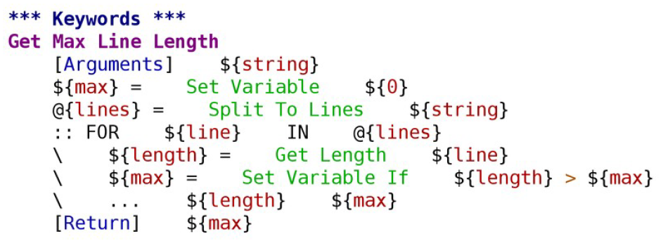

1. 正则表达式
command='diagste -m hum -u %s -f %s -r han -t tcnt'%(computer_id,family_id)
out = connections.execute_mml_without_check(command)
match = re.search(r"\bactive hands \s*([0-9]*)", out, re.I)
if match is not None:
from string import atoi
return atoi(str(match.group(1)), 10)
else:
return 'the return is wrong'
2. FOR循环再robot文件里的用法


3.使用wait until而不是Sleep

自己写一个测试库：

pybot命令：
pybot.bat -v siteURL:http://localhost:1337 -v browser:chrome -v remoteURL:false D:\Beehive\beehivetest\Beehive
关于使用模板：
只要使用了模板，里面只能输入数据，不能使用其他关键字

测试库的引入

或者：

变量定义 可以是下面这样或者 pybot -v param_name:param_value

打Tag的方法：

Force Tags Product_Backlog_ID-B01407 Iteration_ID-I08521 Iteration_ID-I08518 Release-IL1_RIS4 Type-FUT Owner-I_EXT_MBB_WCDMA_SWD3_TEAM_GOLDEN@internal.nsn.com exec_type-automatic
... Element-IL type-FUT rw-weekly hw_env-RNC_S1 hw_env-ADA hw_env-RNC_S0 RNC_EFS_1913_1637_1285
... PRS_ID-IL_PRS_1885 QL-7 EFS_ID-RNC_EFS_2959_212
注释：

Setup 和 Teardown（分别是Suite和Case）
*Setting*
Suite Setup hanging counter pre
Suite Teardown Clear all hanging resource record
以及
***Test Case***
Change owner id after deleting service in PS_NRT call [Tags] CM.FUT.001.MT.I05050 FRS-PCM_100005_4_0000 PRS-1885
[Setup] Create all kind of List
......
......
[Teardown] Clear hanging resource record on USPU and CSPU
 #实现写好一个keyword供调用
#实现写好一个keyword供调用BDD
“Given-When-and-Then” 其中And可以比较灵活的使用，可以看最下面三个例子


Evaluate 关键字的使用

定位：
Chrome: 右键–>”审查元素”–>相应元素右键–>Copy XPath 就可以获得元素的xpath.
绝对定位的Chrome插件：xpath-helper 如果我们要查找某一个、或者某一块元素的xpath路径，可以按住shift，并移动到这一块中


Firefox里面装xpath check https://www.cnblogs.com/xtt-w/p/5904284.html
教程
file:///D:/userdata/h3liang/Downloads/RobotFramework-Selenium2Library1.8%E4%B8%AD%E6%96%87%E7%89%88_.pdf
list处理: